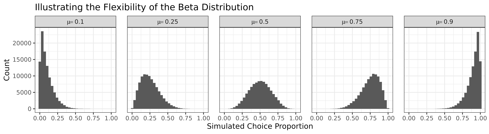
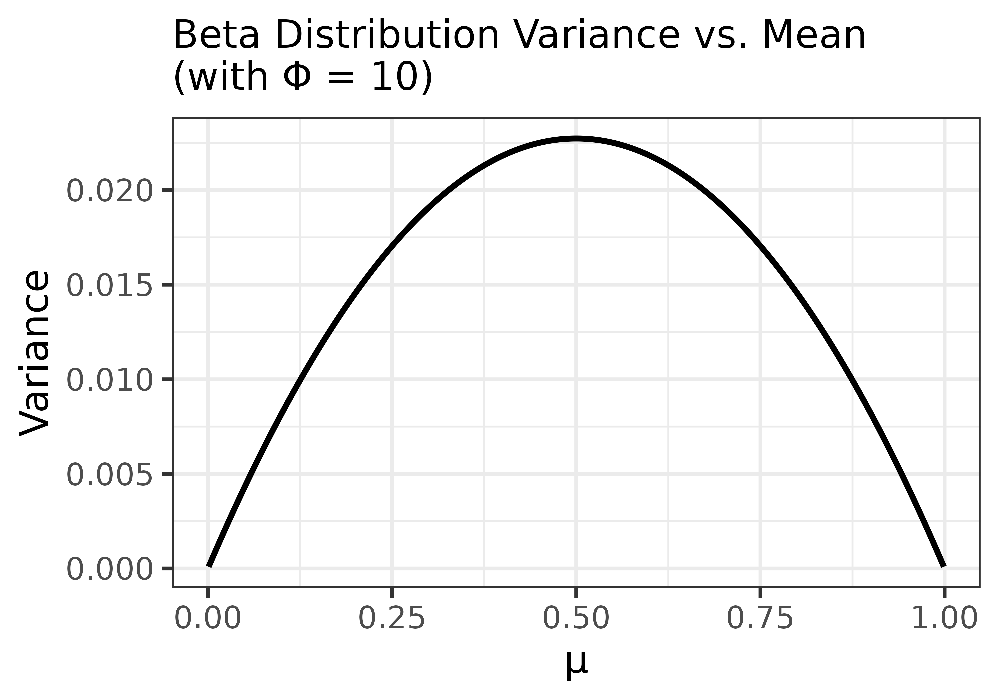

In many scientific contexts, it is not enough to assess how well a model fits the data; we also need to compare competing models and determine which offers the most parsimonious and explanatory account of the observed behaviour. Descriptive metrics such as RMSE or \(R^2\) can provide insight into absolute fit but do not account for model complexity—and are not grounded in likelihood theory.
This vignette introduces a set of information-theoretic model
comparison tools for available via the $info_criteria
output of the choice_mod_eval() function. These
include:
Log-likelihoods, which quantify how well a model predicts observed outcomes under a specified error distribution;
Akaike Information Criterion (AIC) and Bayesian Information Criterion (BIC), which extend the likelihood framework by penalising for model complexity.
The calculations are based on a beta-distributed error model, which is well suited to evaluating predictions of choice proportions—particularly when those proportions are bounded between 0 and 1 and exhibit non-constant variance.
This vignette outlines the rationale behind these metrics, describes the underlying error model assumptions, and demonstrates how to compute and interpret the information-theoretic outputs.
General Usage
To compute information-theoretic model evaluation metrics using
choice_mod_eval(), three inputs are required:
A vector of
observedchoice proportions;A vector of
predictedchoice proportions from the model;An integer
kindicating the number of free parameters used by the model that generated the predictions.
An optional epsilon value may also be specified to bound
the predictions away from 0 and 1; this is discussed in more detail
later.
choice_mod_eval(observed, predicted, k = 0, epsilon = 0.001, ...)When called, it returns a list containing three components:
$desc_stats: A data frame containing the descriptive fit metrics described below (e.g., mean bias, RMSE, MAE, CCC, etc.). These are discussed in detail in the companion article Model Evaluation: Descriptive Statistics.$info_criteria: A data frame containing information-theoretic model comparison metrics (e.g., log-likelihood, AIC, BIC) based on a beta-distributed error model.$residuals: A vector of residuals (i.e., observed minus predicted values), provided for convenience in case users wish to conduct additional analyses or visualizations.
To illustrate how these metrics can inform model comparison, we begin by revisiting a real-world case study from Dunn et al. (2024).
Reassessing Dunn et al. (2024)
Background
As described in the companion article (Model Evaluation: Descriptive Statistics), Dunn et al. (2024) evaluated model performance using \(R^2\) values derived from linear regressions of observed versus predicted choice proportions. Their analysis was applied to the full SiGN model as well as two simplified variants: one omitting the model’s \(\beta\) term, and one excluding the bonus delay reduction component.
In addition to reporting \(R^2\) values, the original analysis included Bayes Factors derived from regression-based log-likelihoods. In this vignette, we use the SiGN R package to demonstrate a more principled approach—grounded in likelihood theory and model complexity penalties—to comparing these models using information-theoretic tools.
Generating the Models and Their Predictions
We begin by generating predictions from the three model variants evaluated in Dunn et al. (2024):
The full SiGN model, which includes all terms;
A no-β variant, in which the \(\beta\) parameter is disabled (removing its influence on weighting conditional vs. terminal reinforcement);
A no-bonus variant, in which the model omits the bonus delay reduction component that defines suboptimal choice scenarios in the SiGN framework.
The subopt_avian data set included in the package
contains all the necessary parameters to compute model predictions. Each
row represents a different experimental condition, and columns 9–24
provide the required model inputs.
library(SiGN)
# Construct model input list
params <- do.call(choice_params, as.list(subopt_avian[9:24]))We then compute predictions for each of the three model variants:
# Full model predictions
full <- SiGN(params)$details
# No beta model predictions
params$beta_toggle = FALSE
no_beta <- SiGN(params)$detailsFor the no-bonus model, the predictions are constructed manually by excluding the delay reduction mechanism. This yields a model equivalent to that proposed by Spetch & Dunn (1987).
# No bonus model (without bonus delay reduction term)
no_bonus <- (full$r_a * full$dr_avg_a) /
((full$r_a * full$dr_avg_a) + (full$r_b * full$dr_avg_b))
# Apply boundary conditions
cond_1 <- full$dr_avg_a > 0 & full$dr_avg_b < 0
cond_0 <- full$dr_avg_a < 0 & full$dr_avg_b > 0
# Enforce deterministic outcomes for certain boundary cases
no_bonus <- ifelse(cond_1 == TRUE, 1,
ifelse(cond_0 == TRUE, 0, no_bonus)
)Finally, for convenience, we store the observed and predicted choice
proportions in a data frame named preds:
# Combine observed and predicted choice proportions into a data frame
preds <- data.frame(
cp_obs = subopt_avian$cp,
full = full$cp,
no_bonus = no_bonus,
no_beta = no_beta$cp
)These predictions will serve as the input for evaluating model fit using information-theoretic criteria in the sections that follow.
The Error Model
The original SiGN model, as reported in Dunn et al. (2024), contains no free parameters. As such, it lacks any internal mechanism for fitting itself to data. To enable likelihood-based comparisons between the three model variants, we must introduce a statistical assumption about the distribution of errors—that is, how observed outcomes might deviate from the model’s predictions.
In their original analysis, Dunn et al. used \(R^2\) values derived from linear regressions on observed versus predicted values as a descriptive measure of fit. This approach implicitly assumes that residuals are normally distributed and homoscedastic:
\[ \varepsilon_i = y_i - \hat{y_i} \sim \mathcal{N}(0, \sigma^2) \]
It follows from this that the observed values are normally distributed around the predicted values:
\[ y_i \sim \mathcal{N}(\hat{y}_i, \sigma^2) \]
\(\varepsilon_i\): residual
\(y_i\) = observed choice proportion for row \(i\) in
subopt_avian.\(\hat{y}_i\) = model-predicted choice proportion.
\(\sigma^2\) = an unknown error variance estimated from the residuals.
This assumption is widespread—not only in statistical analyses generally, but also within the suboptimal choice literature, where choice proportions are often analysed using t-tests and ANOVAs, both of which rely on the assumption of normally distributed errors. However, this can be problematic when the outcome variable is a proportion bounded between 0 and 1. The normal distribution has infinite support and assigns nonzero probability to impossible values (i.e., those below 0 or above 1), making it a poor match for bounded data like choice proportions.
In addition, choice data often exhibit non-constant variance (heteroscedasticity): predictions near 0 or 1 tend to have smaller variability, while predictions around 0.5 allow for greater spread. Normal models assume homoscedasticity (constant variance), which may not hold here. This is especially true in the suboptimal choice paradigm, where empirical proportions often take on extreme values—exactly 0 or 1—further straining the normality assumption.
A more natural alternative is the Beta distribution, which is defined only on the interval (0, 1). It is also highly flexible: depending on its parameters, it can take on uniform, bell-shaped, U-shaped, or skewed forms.
The Beta distribution is typically parameterised with two shape parameters, \(\alpha\) and \(\beta\):
\[ y_i \sim \text{Beta}(\alpha_i,\ \beta_i) \]
This unfortunately introduces some potential for confusion, as the SiGN model also includes a parameter called \(\beta\)—but the two are unrelated.
For the error model, we will assume that each observed choice proportion \(y_i\) arises from a Beta distribution centered around the SiGN model’s prediction (i.e., \(\mu_i = \hat{y}_i\)), with constant precision \(\phi\). Under this assumption, the two shape parameters become:
\[ \alpha_i = \mu_i \cdot \phi, \quad \beta_i = (1 - \mu_i) \cdot \phi \]
So the error model can be written more specifically as:
\[ y_i \sim \text{Beta}(\mu_i \cdot \phi,\ (1 - \mu_i) \cdot \phi) \]
\(y_i\): observed choice proportion.
\(\mu_i\): SiGN model’s-predicted choice proportion.
\(\phi\): precision parameter (shared across all data points).
This formulation reframes error not as a residual, but as variability around a prediction. Each observation is treated as a random draw from a Beta distribution whose mean is the SiGN model’s prediction. The spread of this distribution reflects uncertainty in fit: when \(\phi\) is large, predictions are tightly clustered around \(\mu_i\); when small, the distribution is more diffuse.
Visualising Beta Error Shapes
To illustrate how the shape of the Beta distribution changes with the prediction \(\mu\), the plot below shows simulated distributions for five representative choice proportion values. When \(\mu = 0.1\), the distribution is strongly positively skewed (a floor effect). At \(\mu = 0.5\), the distribution is symmetric. Near \(\mu = 0.9\), the pattern reverses, with increasing negative skew.
library(tidyverse)
# Parameters
mu <- c(0.1, 0.25, 0.5, 0.75, 0.9)
phi <- 10 # arbitary value
n <- 1e5
# Simulate Beta samples
err_vals <- data.frame(
value = c(
rbeta(n, mu[1] * phi, (1 - mu[1]) * phi),
rbeta(n, mu[2] * phi, (1 - mu[2]) * phi),
rbeta(n, mu[3] * phi, (1 - mu[3]) * phi),
rbeta(n, mu[4] * phi, (1 - mu[4]) * phi),
rbeta(n, mu[5] * phi, (1 - mu[5]) * phi)
),
mu = rep(mu, each = n)
)
# Plot
ggplot(err_vals, aes(x = value)) +
geom_histogram() +
facet_wrap(~mu,
nrow = 1,
labeller = label_bquote(mu == .(as.character(mu)))
) +
labs(
title = "Illustrating the Flexibility of the Beta Distribution",
x = "Simulated Choice Proportion",
y = "Count"
) +
theme_bw() +
theme(panel.spacing.x = unit(1.125, "lines"))
This behaviour underscores the strength of the Beta distribution as an error model: it respects the bounds of proportion data, accommodates skew, and adapts to mean-dependent variance. In contrast, the normal model assumes symmetric, unbounded, and homoscedastic errors—assumptions often violated in behavioural data.
How Variance Changes with the Mean
The Beta distribution also exhibits a characteristic pattern where variance decreases near the boundaries (0 or 1) and peaks at the midpoint (\(\mu = 0.5\)). This is because the variance of a Beta distribution depends on both the mean \(\mu\) and precision \(\phi\). This mean-dependent variance helps explain why the Beta model is well suited for choice data: it captures the intuition that variability is greatest when choice is uncertain (near 0.5) and smallest when choice is near-deterministic (near 0 or 1).
From Soch, et al. (2024), the variance of a beta distribution is:
\[ \text{Var}(X) = \frac{\alpha\beta}{(\alpha + \beta + 1) \cdot (\alpha + \beta)^2} \]
The following plot shows how the variance changes as a function of \(\mu\), assuming a constant \(\phi = 10\):
# Parameters
mu <- seq(0.001, 0.999, by = 0.001)
phi <- 10 # arbitrary value
a <- mu * phi
b <- (1 - mu) * phi
v <- (a * b) / ((a + b + 1) * (a + b)^2)
ggplot(mapping = aes(x = mu, y = v)) +
geom_line(linewidth = 1) +
labs(
title = "Beta Distribution Variance vs. Mean\n(with Φ = 10)",
x = "μ",
y = "Variance"
) +
theme_bw(base_size = 14) +
theme(plot.title = element_text(size = 14))
Estimating a Value for \(\phi\)
The Beta distribution used in our error model includes a precision parameter, \(\phi\), which governs how tightly the observed values are expected to cluster around the model’s predictions. This plays a role analogous to variance (e.g., \(\sigma^2\)) in Gaussian models—except that here, larger values of \(\phi\) imply lower variability.
Rather than choosing \(\phi\) arbitrarily, we estimate it from the data using maximum likelihood estimation. This approach finds the value of \(\phi\) that makes the observed data most probable under the assumed Beta error model.
In this context, the likelihood quantifies how well the model—with a given value of \(\phi\)—explains the observed choice proportions. A higher likelihood means better alignment between model and data. In practice, we minimise the negative log-likelihood, which simplifies optimisation and improves numerical stability.
The $phi column returned by
choice_mod_eval() contains the estimated value of \(\phi\) obtained via this method. Below, we
walk through a manual version of this calculation using the full SiGN
model.
Estimating \(\phi\) for the Full Model in R
When estimating \(\phi\), a small technical complication arises with the Beta distribution: specifically, it is only defined for values strictly between 0 and 1. Because both the observed and predicted choice proportions are allowed to include values at the boundaries (e.g., 0 or 1), we need to apply a continuity correction to ensure numerical stability. This adjustment is used only for likelihood calculations—the original values are retained elsewhere.
In the subopt_avian dataset, the observed proportions
often come close to 0 and 1 but do not actually reach them. However, the
SiGN model’s predictions do occasionally reach them. Thus, to
future-proof the code, we will apply the continuity correction to both
observed and predicted values.
The code below ensures that no observed or predicted value is smaller
than epsilon = 0.001 or larger than
1 - epsilon = 0.999:
epsilon <- 0.001
y <- pmin(pmax(preds$cp_obs, epsilon), 1 - epsilon)
mu <- pmin(pmax(preds$full, epsilon), 1 - epsilon)pmax(preds$cp_obs, epsilon)replaces any values less than 0.001 with 0.001pmin(..., 1 - epsilon)then caps any values above 0.999 at 0.999
This correction is applied only for the purposes of likelihood estimation. The unadjusted values are preserved for all other computations and outputs.
It is worth noting that the choice of epsilon can
strongly influence the log-likelihood, especially when predicted or
observed values are near the boundaries (0 or 1). Users are encouraged
to check the sensitivity of the output to different epsilon values. That
said, for most applications involving behavioural data, a default of
epsilon = 0.001 is likely to be both reasonable.
Next, we define the negative log-likelihood function for the Beta
distribution and use R’s optimize() function to find the
value of \(\phi\) that minimises
it:
# Define negative log-likelihood
neg_loglik <- function(phi, y, mu) {
alpha <- mu * phi
beta <- (1 - mu) * phi
-sum(dbeta(y, alpha, beta, log = TRUE))
}
# Estimate phi using MLE
optim_result <- optimize(neg_loglik, interval = c(1, 200), y = y, mu = mu)
phi_est <- optim_result$minimum
phi_est
#> [1] 8.698582As mentioned earlier, this estimated \(\phi\) quantifies the model’s precision under the Beta error model—that is, how tightly the observed values cluster around the predictions from the full SiGN model. A higher value suggests that the observed choice proportions are tightly clustered around the predicted values, while a lower value indicates greater variability or model misfit.
Computing the Total Log-Likelihood
Once we’ve estimated the optimal value of \(\phi\) we can compute the total log-likelihood, which quantifies how well the model—given its predictions and the fitted precision parameter—accounts for the observed data.
Specifically, for each observed value \(y_i\), we evaluate the logarithm of the Beta probability density function, using the model’s predicted mean \(\mu_i\) and shape parameters derived from \(\phi\). Summing these values across all observations yields the total log-likelihood:
\[ \log L = \sum \log[\text{Beta}(y_i | \alpha_i, \beta_i)] \]
The $logLik column returned by
choice_mod_eval() reports this value automatically. Below,
we replicate the calculation manually for the full model, using the
corrected predictions (mu) and observed values
(y) from earlier:
# Function to compute total log-likelihood given mu, y, and phi
compute_loglik <- function(mu_raw, y, phi) {
alpha <- mu * phi
beta <- (1 - mu) * phi
sum(dbeta(y, alpha, beta, log = TRUE))
}
LL_full <- compute_loglik(preds$full, y, phi_est)
LL_full
#> [1] -16.70615This total log-likelihood represents the joint plausibility of the observed data under the full SiGN model with fitted \(\phi\). It is the foundational quantity from which information-theoretic metrics like AIC and BIC are derived.
Comparing the Models
While log-likelihood values can be used to compare how well each model accounts for the data, a more principled approach is to use the Akaike Information Criterion (AIC) or Bayesian Information Criterion (BIC). Both metrics are derived from the model’s total log-likelihood, but they also include penalties for model complexity—discouraging overfitting. BIC imposes a stronger penalty than AIC.
In this context, “model complexity” is measured by the number of free parameters \(k\). The equations for AIC and BIC are:
\[ \begin{aligned} \text{AIC} &= 2k - 2\log L \\ \text{BIC} &= \log(n) \cdot k - 2\log L \end{aligned} \]
\(\log L\) is the log-likelihood.
\(k\) is the number of estimated parameters (1 in this case).
\(n\) is the number of observations.
Although none of the three models include free parameters in their predictive structure, the precision parameter \(\phi\) in the Beta error model is estimated from the data. This means that, for likelihood-based model comparison, each model is effectively treated as having one free parameter.
Because \(k = 1\) is the same for all three models, the penalty terms \(2k\) (AIC) and \(\log(n) \cdot k\) (BIC) are constant across models and do not affect their relative rankings. In such cases, model selection based on AIC, BIC, or log-likelihood alone will lead to the same conclusions.
Extracting Likelihood Information
The code below applies the choice_mod_eval() function to
obtain log-likelihood, AIC, and BIC values for each model.
full <- choice_mod_eval(preds$cp_obs, preds$full, k = 0)
no_beta <- choice_mod_eval(preds$cp_obs, preds$no_beta, k = 0)
no_bonus <- choice_mod_eval(preds$cp_obs, preds$no_bonus, k = 0)
full$info_criteria # full model
#> n_parameters phi logLik AIC BIC
#> 1 1 8.698582 -16.70615 35.41229 38.26432
no_beta$info_criteria # no-beta model
#> n_parameters phi logLik AIC BIC
#> 1 1 8.505385 -18.04257 38.08513 40.93716
no_bonus$info_criteria # no-bonus model
#> n_parameters phi logLik AIC BIC
#> 1 1 2.387355 -212.1828 426.3657 429.2177Although we pass k = 0 to the function, the
implementation automatically adds 1 internally to account for the
estimated precision parameter \(\phi\).
This design allows users to supply k as the number of
parameters in the predictive model itself, while keeping the error model
assumption consistent.
Thus, users are not limited to evaluating the SiGN model—this function can be applied to any model that produces predictions on the (0, 1) interval, such as logistic regression, reinforcement learning models, or other proportion-based models.
⚠️ Caveat: The predictive model should provide only the expected value (i.e., mean structure), and not incorporate its own stochastic error model. If the model already simulates or embeds variability (e.g., by sampling outcomes or including its own likelihood), then layering an additional Beta error model on top may be inappropriate, as the assumptions of
choice_mod_eval()would no longer hold.
Bayes Factors
While log-likelihood, AIC, and BIC can each be used to compare how well models account for the data, it is often helpful to convert these metrics into a more interpretable scale. One such approach is the Bayes Factor (BF), which expresses the relative evidence for one model over another.
For instance:
The model with the largest log-likelihood fits best.
The model with the smallest AIC or BIC is preferred.
But the magnitude of these differences is difficult to interpret directly. Bayes Factors solve this by transforming the difference in BIC scores into a ratio of support:
\[ \text{BF}_{01} \approx \exp(\frac{1}{2}(\text{BIC}_1 - \text{BIC}_0)) \] where:
- \(\text{BIC}_0\): The BIC value for the reduced version of the SiGN model (i.e., no bonus and no beta versions).
- \(\text{BIC}_1\): The BIC value for the full SiGN model.
This formulation yields \(\text{BF}_{01}\), the evidence in favour of the reduced model. Taking the reciprocal gives the “inverse Bayes Factor” (\(\text{BF}_{10}\)), which, in this context, shows evidence in favour of the full model:
\[ \text{BF}_{10} = \frac{1}{\text{BF}_{01}} \]
A \(BF_{10} > 1\) indicates support for the full model, with larger values implying stronger evidence.
The following table provides an interpretive scale for Bayes Factors, based on Jeffreys (1961):
| Support for BF₁₀ | Interpretation |
|---|---|
| 1-3 | Anecdotal evidence |
| 3-10 | Substantial evidence |
| 10-32 | Strong evidence |
| 32-100 | Very strong evidence |
| > 100 | Decisive evidence |
Computing Bayes Factors from BIC
We start by storing the BIC values for each model for ease of use:
bic_full <- full$info_criteria$BIC
bic_no_beta <- no_beta$info_criteria$BIC
bic_no_bonus <- no_bonus$info_criteria$BICComparison: Full Model vs. No-\(\beta\) Model
# BIC_1 = full, BIC_0 = no beta
BF_01 <- exp((bic_full - bic_no_beta) / 2)
BF_10 <- 1 / BF_01 # Evidence for full over no-beta
BF_10
#> [1] 3.805395The inverse Bayes Factor (3.81) shows good positive evidence for the inclusion of the SiGN model’s \(\beta\) term.
Comparison: Full Model vs. No-Bonus Model
# BIC_1 = full, BIC_0 = no bonus
BF_01 <- exp((bic_full - bic_no_bonus) / 2)
BF_10 <- 1 / BF_01 # Evidence for full over no bonus
BF_10
#> [1] 7.84247e+84The inverse Bayes Factor (> 100) shows decisive evidence for the inclusion of bonus delay-reduction in the model.
At face value, a result like 7.84247e+84 may appear
absurdly large, but this is a mathematical property of Bayes Factors:
because they are computed by exponentiating half the difference in BIC,
even moderate BIC differences can yield very large values. Such results
are not errors—they simply reflect overwhelming support for one model
over the other on a log-probability scale.
Conclusion
In both comparisons, the full SiGN model is preferred—especially over the no-bonus variant, where the evidence is overwhelming. Although Dunn et al. (2024) relied on a less appropriate analytical method—using regressions of observed versus predicted values—their qualitative conclusion was ultimately correct: the full model offers the best account of the data.
That said, their method overstated the evidence for including the \(\beta\) term. The Bayes Factor analysis presented here reveals a more modest but consistent advantage. Still, as noted in the companion article (Model Evaluation: Descriptive Statistics), the role of \(\beta\) was never expected to produce dramatic shifts in the model’s predictions. Its relatively subtle effect should not be taken as evidence against its conceptual relevance.
References
Dunn, R. M., Pisklak, J. M., McDevitt, M. A., & Spetch, M. L. (2024). Suboptimal choice: A review and quantification of the signal for good news (SiGN) model. Psychological Review. 131(1), 58-78. https://doi.org/10.1037/rev0000416
Jeffreys, H. (1948). Theory of probability (2nd Ed.). Oxford
Soch, et al. (2024). The Book of Statistical Proofs (Version 2023). https://doi.org/10.5281/ZENODO.4305949